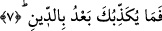

tarafına “fa” harfinin gelmesi “lakin” kelimesinin isminin şart mânâsı taşımasından
dolayıdır. Bu ifâde birinci tefsire göre sebeb bildirmektedir. Buna göre âyetin mânâsı:
Allah onların biçimlerini Cehennemde değiştirmez çünkü onlar Cennette sevaba
ereceklerdir, demek olur.
et-Teysir’de Peygamber Efendimiz (s.a.)’den belâ ve meşakkatlere sabırla ilgili
olmak üzere şöyle bir hadis geçiyor: “Herhangi bir kul hastalandı mı veya yolculuğa
çıktı mı kendisine sağlığı yerinde iken ve mukiym halde iken yapmış olduğu amellerin
sevabı aynen yazılır.” [156] Bir başka rivâyete göre; hadisin metninde kocayıp,
ihtiyarladığı zamanda da gençliğinde yapmış olduğu ibâdetleri yazılır, şeklinde bir ifâde
vardır.
Ebu’l-Leys tefsirinde Peygamber Efendimiz (s.a.)’den şöyle bir rivâyet yer
almaktadır: “Bir mü’min öldüğünde iki melek semaya yükselerek Allah Teâlâ’ya;
‘Kulun filanca öldü, bize izin ver de semada sana ibâdet edelim’ derler. Onların bu
isteklerine Allah şöyle cevap verir: Benim göklerim meleklerimle doludur. Fakat siz o
ölen kulumun kabrine gidin ve onun iyi amellerini kıyamet gününe dek yazmaya
devam edin” [157] der. Âyette yer alan “ğayru memnun” ifâdesini, eksilmeyen, arkası
kesilmeyen şeklinde tefsir ettik. Bu ifâdeyi, İnşikak sûresinin sonunda geçtiği üzere başa
kakılmayan bir ecir vardır biçiminde tefsir etmek de mümkündür.
7. Artık bundan sonra, cezâ günü konusunda seni kim yalanlayabilir?
Bu âyette yer alan “ba’du” zamme üzere mebnîdir. Çünkü muzâfun ileyhi
hazfedilmiştir. Âyetin başındaki soru edatı hayret anlamı ifâde etmektedir. Buna göre
âyetin mânâsı: Ey Muhammed! Ahiret gününün olacağını dile getiren bu delillerin zuhûr
etmesinin ardından hesaba çekilme konusunda gerek delalet yoluyla, gerekse açıktan
açığa seni hangi şey yalanlayabilir? Yâni hesab gününün var olduğunu söylemen,
öldükten sonra dirilmeyi haber vermen sebebiyle senin yalan söylediğini kim
söyleyebilir, kim iddiâ edebilir? Bundan maksad Allah Teâlâ’nın kudretinin
mükemmelliğine delalet eden âyet ve alâmetlerdir. Çünkü boyu posu düpdüzgün olan
bir insanı değersiz bir sudan yaratan, zâhir ve batınını en güzel biçime koyan kendisini
azar azar, aşama aşama, yükselterek en güzel ve en olgun bir biçime koyan, sonra da baş
aşağıya geri çevirip erzel-i ömre ulaştıran bir yaratıcının öldükten sonra diriltmeye ve
insanlara yaptıklarının karşılığını vermeye kudreti olduğunda kuşku yoktur. Şu halde ey
insanoğlu! Hesaba çekilmenin sebebini sana yalan saydıran ve bunca delilin ardından
inkâr ettiren nedir? Bir başka ifâdeyle sen hesaba çekilmeyi inkâr etmekle yalan
söylüyorsun. Çünkü hakkı yalan sayan herkes yalancıdır.
Kısacası; insanın bir nutfeden yaratılması ve düzgün bir beşer olarak en güzel biçime